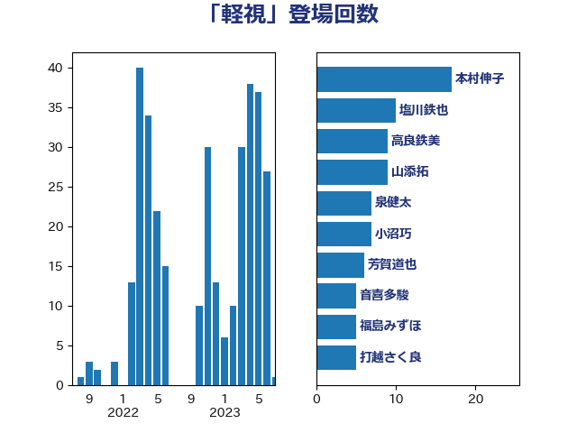

単語「軽視」

| 本村伸子 | 日本共産党 | 17 回 |
| 塩川鉄也 | 日本共産党 | 10 回 |
| 高良鉄美 | 無所属 | 9 回 |
| 山添拓 | 日本共産党 | 9 回 |
| 泉健太 | 立憲民主党 | 7 回 |
| 小沼巧 | 立憲民主党 | 7 回 |
| 芳賀道也 | 国民民主党 | 6 回 |
| 音喜多駿 | 日本維新の会 | 5 回 |
| 福島みずほ | 社会民主党 | 5 回 |
| 打越さく良 | 立憲民主党 | 5 回 |
| 川田龍平 | 立憲民主党 | 5 回 |
| 野田佳彦 | 立憲民主党 | 4 回 |
| 道下大樹 | 立憲民主党 | 4 回 |
| 田村貴昭 | 日本共産党 | 4 回 |
| 山田勝彦 | 立憲民主党 | 4 回 |
| 嘉田由紀子 | 無所属 | 4 回 |
| 吉良よし子 | 日本共産党 | 4 回 |
| 伊波洋一 | 無所属 | 4 回 |
| 階猛 | 立憲民主党 | 3 回 |
| 長友慎治 | 国民民主党 | 3 回 |
| 野田国義 | 立憲民主党 | 3 回 |
| 足立康史 | 日本維新の会 | 3 回 |
| 田村まみ | 国民民主党 | 3 回 |
| 牧山ひろえ | 立憲民主党 | 3 回 |
| 早稲田ゆき | 立憲民主党 | 3 回 |
| 斎藤アレックス | 国民民主党 | 3 回 |
| 平木大作 | 公明党 | 3 回 |
| 小川淳也 | 立憲民主党 | 3 回 |
| 宮本徹 | 日本共産党 | 3 回 |
| 塩村あやか | 立憲民主党 | 3 回 |
| 倉林明子 | 日本共産党 | 3 回 |
| 伊藤岳 | 日本共産党 | 3 回 |
| 中西祐介 | 自由民主党 | 3 回 |
| おおつき紅葉 | 立憲民主党 | 3 回 |
| 齋藤健 | 自由民主党 | 2 回 |
| 高市早苗 | 自由民主党 | 2 回 |
| 馬場伸幸 | 日本維新の会 | 2 回 |
| 青柳仁士 | 日本維新の会 | 2 回 |
| 阿部司 | 日本維新の会 | 2 回 |
| 長妻昭 | 立憲民主党 | 2 回 |
| 鈴木俊一 | 自由民主党 | 2 回 |
| 野間健 | 立憲民主党 | 2 回 |
| 若宮健嗣 | 自由民主党 | 2 回 |
| 舞立昇治 | 自由民主党 | 2 回 |
| 篠原孝 | 立憲民主党 | 2 回 |
| 石垣のりこ | 立憲民主党 | 2 回 |
| 田村智子 | 日本共産党 | 2 回 |
| 片山大介 | 日本維新の会 | 2 回 |
| 沢田良 | 日本維新の会 | 2 回 |
| 水野素子 | 立憲民主党 | 2 回 |
| 櫻井周 | 立憲民主党 | 2 回 |
| 横山信一 | 公明党 | 2 回 |
| 梅村みずほ | 日本維新の会 | 2 回 |
| 枝野幸男 | 立憲民主党 | 2 回 |
| 村田享子 | 立憲民主党 | 2 回 |
| 末松信介 | 自由民主党 | 2 回 |
| 早坂敦 | 日本維新の会 | 2 回 |
| 岸田文雄 | 自由民主党 | 2 回 |
| 山岡達丸 | 立憲民主党 | 2 回 |
| 山下芳生 | 日本共産党 | 2 回 |
| 小西洋之 | 立憲民主党 | 2 回 |
| 小沢雅仁 | 立憲民主党 | 2 回 |
| 小宮山泰子 | 立憲民主党 | 2 回 |
| 宮本岳志 | 日本共産党 | 2 回 |
| 太栄志 | 立憲民主党 | 2 回 |
| 天畠大輔 | れいわ新選組 | 2 回 |
| 大石あきこ | れいわ新選組 | 2 回 |
| 和田政宗 | 自由民主党 | 2 回 |
| 吉田統彦 | 立憲民主党 | 2 回 |
| 吉川沙織 | 立憲民主党 | 2 回 |
| 北神圭朗 | 無所属 | 2 回 |
| 住吉寛紀 | 日本維新の会 | 2 回 |
| 伊藤俊輔 | 立憲民主党 | 2 回 |
| 井上哲士 | 日本共産党 | 2 回 |
| 中西健治 | 自由民主党 | 2 回 |
| 上田清司 | 国民民主党 | 2 回 |
| 高橋千鶴子 | 日本共産党 | 1 回 |
| 阿部弘樹 | 日本維新の会 | 1 回 |
| 長浜博行 | 無所属 | 1 回 |
| 鈴木義弘 | 国民民主党 | 1 回 |
| 野村哲郎 | 自由民主党 | 1 回 |
| 赤木正幸 | 日本維新の会 | 1 回 |
| 赤嶺政賢 | 日本共産党 | 1 回 |
| 西村智奈美 | 立憲民主党 | 1 回 |
| 菅直人 | 立憲民主党 | 1 回 |
| 舩後靖彦 | れいわ新選組 | 1 回 |
| 緑川貴士 | 立憲民主党 | 1 回 |
| 紙智子 | 日本共産党 | 1 回 |
| 米山隆一 | 立憲民主党 | 1 回 |
| 笠井亮 | 日本共産党 | 1 回 |
| 竹詰仁 | 国民民主党 | 1 回 |
| 石川香織 | 立憲民主党 | 1 回 |
| 石川大我 | 立憲民主党 | 1 回 |
| 石井苗子 | 日本維新の会 | 1 回 |
| 田名部匡代 | 立憲民主党 | 1 回 |
| 田中健 | 国民民主党 | 1 回 |
| 片山さつき | 自由民主党 | 1 回 |
| 漆間譲司 | 日本維新の会 | 1 回 |
| 清水貴之 | 日本維新の会 | 1 回 |
| 浦野靖人 | 日本維新の会 | 1 回 |
| 浜野喜史 | 国民民主党 | 1 回 |
| 浜田聡 | NHK党 | 1 回 |
| 柴愼一 | 立憲民主党 | 1 回 |
| 柴山昌彦 | 自由民主党 | 1 回 |
| 柳ヶ瀬裕文 | 日本維新の会 | 1 回 |
| 杉田水脈 | 自由民主党 | 1 回 |
| 星北斗 | 自由民主党 | 1 回 |
| 新垣邦男 | 立憲民主党 | 1 回 |
| 川合孝典 | 国民民主党 | 1 回 |
| 岩谷良平 | 日本維新の会 | 1 回 |
| 岩田和親 | 自由民主党 | 1 回 |
| 山本香苗 | 公明党 | 1 回 |
| 山本剛正 | 日本維新の会 | 1 回 |
| 山崎正恭 | 公明党 | 1 回 |
| 小池晃 | 日本共産党 | 1 回 |
| 奥野総一郎 | 立憲民主党 | 1 回 |
| 大島九州男 | れいわ新選組 | 1 回 |
| 堀場幸子 | 日本維新の会 | 1 回 |
| 城井崇 | 立憲民主党 | 1 回 |
| 坂本祐之輔 | 立憲民主党 | 1 回 |
| 和田有一朗 | 日本維新の会 | 1 回 |
| 吉田宣弘 | 公明党 | 1 回 |
| 古賀千景 | 立憲民主党 | 1 回 |
| 古川元久 | 国民民主党 | 1 回 |
| 原口一博 | 立憲民主党 | 1 回 |
| 北村経夫 | 自由民主党 | 1 回 |
| 勝俣孝明 | 自由民主党 | 1 回 |
| 伊藤孝恵 | 国民民主党 | 1 回 |
| 伊東信久 | 日本維新の会 | 1 回 |
| 井原巧 | 自由民主党 | 1 回 |
| 串田誠一 | 日本維新の会 | 1 回 |
| 中谷一馬 | 立憲民主党 | 1 回 |
| 中田宏 | 自由民主党 | 1 回 |
| 三木圭恵 | 日本維新の会 | 1 回 |